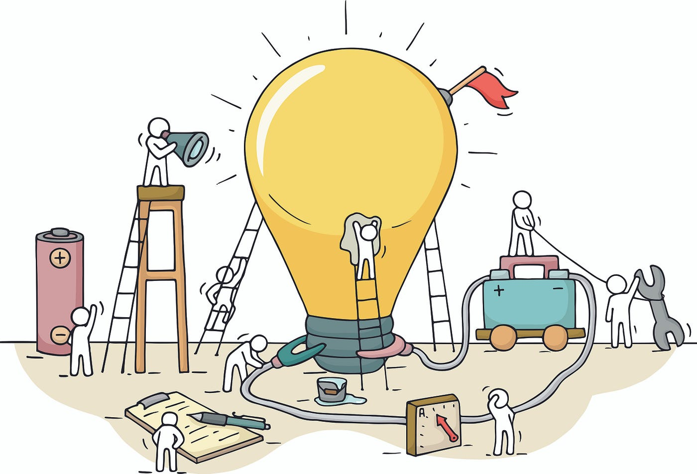

Introducción: La Creatividad Digital en la Era Contemporánea :
En la era digital en la que vivimos, la creatividad se ha expandido más allá de los límites convencionales, dando paso a un vasto y diverso mundo de posibilidades: la creatividad digital. Esta forma de expresión artística y creación de contenido ha revolucionado la manera en que concebimos, compartimos y consumimos información, entretenimiento y arte.
La creación digital se erige como un pilar fundamental en la sociedad contemporánea, desempeñando un papel crucial en diversas industrias y campos de conocimiento. Desde el diseño gráfico hasta la realidad virtual, pasando por la música digital, la animación y el arte digital, esta amalgama de disciplinas ha transformado radicalmente la manera en que interactuamos con el mundo que nos rodea.
La importancia y relevancia de la creación digital en la actualidad son innegables. No solo ha democratizado el acceso a herramientas y plataformas de expresión creativa, sino que también ha abierto nuevas fronteras para la innovación y la colaboración. En un mundo cada vez más digitalizado, la capacidad de generar contenido digitalmente se ha convertido en una habilidad esencial tanto para profesionales como para aficionados.
El objetivo de este trabajo es explorar en profundidad el fenómeno de la creatividad digital, examinando su impacto en la sociedad contemporánea, sus implicaciones en diversas industrias y su potencial para moldear el futuro. A través del análisis de casos de estudio, tendencias emergentes y reflexiones sobre los desafíos y oportunidades que enfrenta, se pretende arrojar luz sobre este fascinante y dinámico campo de estudio.
